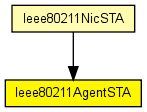
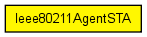

Used in 802.11 infrastructure mode: in a station (STA), this module controls channel scanning, association and handovers, by sending commands (e.g. Ieee80211Prim_ScanRequest) to the management module (Ieee80211MgmtSTA).
Author: Andras Varga
The following diagram shows usage relationships between types. Unresolved types are missing from the diagram. Click here to see the full picture.
The following diagram shows inheritance relationships for this type. Unresolved types are missing from the diagram. Click here to see the full picture.
If a module type shows up more than once, that means it has been defined in more than one NED file.
| Ieee80211NicSTA (compound module) |
This NIC implements an 802.11 network interface card, in a STA, using infrastructure mode. |
| Name | Type | Default value | Description |
|---|---|---|---|
| activeScan | bool | true |
selects between active and passive scanning |
| channelsToScan | string | "" |
list of channel numbers to scan (space delimited); empty means all channels |
| probeDelay | double |
delay before sending a probe request during active scanning |
|
| minChannelTime | double |
min interval to spend on a channel during active scanning |
|
| maxChannelTime | double |
channel time for passive scanning, and max channel time for active scanning |
|
| authenticationTimeout | double | 5s |
timeout for the authentication procedure |
| associationTimeout | double | 5s |
timeout for the association procedure |
| Name | Value | Description |
|---|---|---|
| display | i=block/control |
| Name | Direction | Size | Description |
|---|---|---|---|
| mgmtIn | input | ||
| mgmtOut | output |
// // Used in 802.11 infrastructure mode: in a station (STA), this module // controls channel scanning, association and handovers, by sending commands // (e.g. Ieee80211Prim_ScanRequest) to the management module (Ieee80211MgmtSTA). // // @author Andras Varga // simple Ieee80211AgentSTA { parameters: bool activeScan = default(true); // selects between active and passive scanning string channelsToScan = default(""); // list of channel numbers to scan (space delimited); empty means all channels double probeDelay @unit("s"); // delay before sending a probe request during active scanning double minChannelTime @unit("s"); // min interval to spend on a channel during active scanning double maxChannelTime @unit("s"); // channel time for passive scanning, and max channel time for active scanning double authenticationTimeout @unit("s") = default(5s); // timeout for the authentication procedure double associationTimeout @unit("s") = default(5s); // timeout for the association procedure @display("i=block/control"); gates: input mgmtIn; output mgmtOut; }